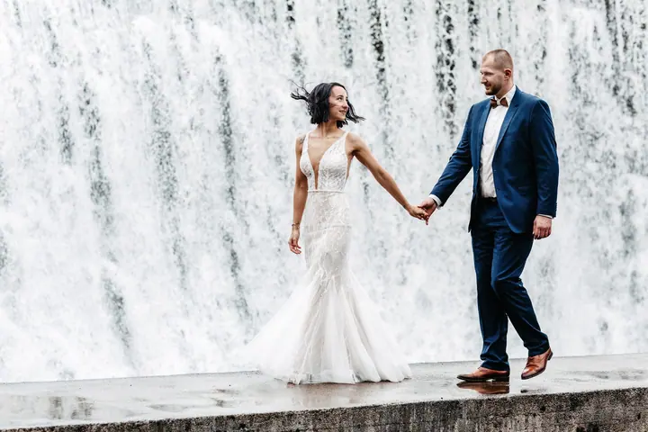
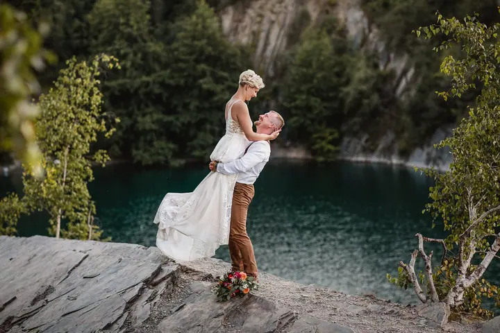

jedna
Svatební focení
Celý svatební den od přípravy nevěsty přes obřad a hostinu až po první tanec a večerní zábavu. V ceně je deset hodin focení a 500–700 upravených fotografií.


Jmenuji se Monika Bauer a fotím svatby po celé republice. Můj muž Tom k tomu natáčí videa a létá s dronem, takže na svatbu přijedeme ve dvou, rovnou naší obytnou dodávkou. Na svatbách jsme od roku 2015 a pořád nás to neskutečně baví.
Více o mně
Co dělám
jedna
Celý svatební den od přípravy nevěsty přes obřad a hostinu až po první tanec a večerní zábavu. V ceně je deset hodin focení a 500–700 upravených fotografií.
Svatební den natáčí můj muž Tom a k tomu létá s dronem. Dostanete svatební klip na 3–5 minut a svatební film na 30–40 minut.
Přirozené fotky pojaté jako reportáž, u vás doma, na zahradě nebo v oblíbené cukrárně. První chvíle s miminkem nebo dětské narozeniny, na věku dítěte nezáleží.
Jedna až dvě hodiny focení venku a deset upravených fotografií. Šaty vám zapůjčím, jsou v ceně.

Každá fotografie má svůj příběh.

Za objektivem
Jsme sehraný, vysmátý manželský pár. Já fotím, Tom natáčí a dronuje, a spolu frčíme obytnou dodávkou po celé republice. Svatby milujeme a ujíždíme na nich už od roku 2015.
Na svatbě chci být tam, kde se píše váš příběh. Od přípravy nevěsty přes obřad, gratulace a krájení dortu až po první tanec a večerní zábavu. Ráda fotím přirozeně, ale nebojím se ani velkých kulis, ať je to zámek, kostel, pole se starými džípy nebo vodopád.
Kromě svateb jezdím fotit i rodiny přímo k vám domů. První chvíle s miminkem, dětské narozeniny nebo těhotenské focení v přírodě. Jsem ráda, když stejně jako já milujete přirozenost.
Monika
Než se uvidíme na svatbě, potkáme se na předsvatební schůzce přes videohovor. Probereme, jak si svůj den představujete.
Společně sestavíme svatební harmonogram, aby den plynul v klidu a na nic se nezapomnělo.
Fotím deset hodin, od přípravy nevěsty přes obřad, skupinové foto a portréty až po házení kytice, první tanec a večerní zábavu.
Pošlu vám zhruba 500–700 upravených fotografií digitálně v plném rozlišení. Když nechcete čekat, můžete si připlatit dodání do deseti pracovních dnů.
Portfolio
Otázky
Svatební fotografování stojí 18 500 Kč a zahrnuje deset hodin focení. Každá další hodina je za 850 Kč.
Jezdíme po celé republice. Doprava do 50 km je v ceně, dál počítám 6 Kč za kilometr. Když si objednáte foto i video zároveň, je doprava po celé ČR zdarma.
Ano, natáčí můj muž Tom. Natáčení svatebního dne stojí 19 500 Kč a dostanete svatební klip na 3–5 minut a svatební film na 30–40 minut.
Je to doplněk ke svatebnímu focení: 12 černobílých fotografií nevěsty za příplatek 2 000 Kč.
Napište pár vět o tom, co si představujete. · +420 604 925 609